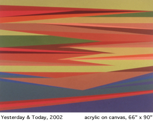

Odili Donald Odita's site-specific installations explore contemporary
notions of space and the confluence of personal memory and cultural
history. In his abstract paintings on canvas, wall paintings, drawings,
and conceptual objects, he brings aspects of African, European, and
American cultures into play.
Odita is best known for his hard-edged abstract paintings, with their
bright vectors of color that streak the canvas like endlessly transforming
waves in a digital vastness. An onlooker might think of television test-band
patterns, African textiles, electronic music, and late-modernist painting,
all in brief space of viewing one work.
These paintings have something of the look of colorfield painting of
the 1960s and 70s, but Odita's style is thoroughly contemporary. His
inspiration comes from his experiences in the New York art world of
the 1990s, his encyclopedic knowledge of art history, and the marvelous
glut of American popular culture. It is also rooted in the culture of
the Igbo people of Nigeria and the close, if sporadic, contact Odita's
family has with their ancestral land.
Miami Art Museum's New Work: Odili Donald Odita-the artist's first one-person
museum exhibition in the United States-displays the two most potent
manifestations of Odita's work to date: acrylic-on-canvas paintings
which deal with general, somewhat elusive matters of identity; and conceptual
objects and drawings based on his travels to his homeland.
Odita was born in Enugu, Nigeria, but spent only the first few months
of his life there. He came to the United States in 1966 just before
the Biafran War, when his father was awarded a scholarship from the
Nigerian government to study art and art history at Indiana State University.
Odita
grew up in suburban Columbus, Ohio, completed his undergraduate studies
at Ohio State University, and received a graduate degree in fine arts
from Bennington College in Vermont in 1990. Bennington has been an important
nexus of modernist art activity since the 1950s. Some of Odita's professors,
for example, were friendly with the renowned critic Clement Greenberg
and such abstract painters as Morris Louis and Kenneth Noland. Odita
thus experienced American modernism with a remarkable intimacy, and
though he respected his teachers and their ideas, he and his peers,
like innovators of every generation, took it on themselves to challenge
them as well.
After Bennington, he traveled to New York City where the art world of
the 1990s was dominated by multiculturalism and the politics of identity.
Few artists were using abstract painting as a vehicle to explore these
issues, although Odita continued to do so. In 1994 he met three fellow
Nigerians: Okwui Enwezor, who was starting a journal called Nka: Journal
of Contemporary African Art, and Olu Oguibe and Iké Udé,
who were editors there. Odita began contributing articles to the magazine
and through lively debates about contemporary art and cultural politics,
he began to shape his notions about his art and himself.
He also began curating exhibitions of other young New York artists.
This, and his work with computer design-specifically with Adobe Photoshop-added
another dimension to the process of self-discovery. He was becoming
disenchanted with painting-which he increasingly saw as an exhausted
form-but when he discovered that he could "paint" without
using a brush and canvas, he realized it was possible to step outside
the conventions of the medium without abandoning it altogether. He returned
to painting with renewed confidence and a belief that it remained a
supple, imaginative instrument for his ideas.
It was in this atmosphere that Odita developed his signature approach
to abstraction and his interest in multimedia installations. The sense
of space he creates in his paintings can seem, in one moment, electronic,
in another, scenic, and in yet another, psychological. The surfaces
are flat, yet they readily evoke a sense of deep space. They may teem
with a frenetic, pulsating energy, or possess the profound equanimity
of an alpine lake. Their colors combine to suggest a world that is,
in one light, synthetic and, in another, as natural as wooded hills.
They contain both the warmth of familial memory and the uncertain intimations
of ancestry. There is in these works, above all, a sensual richness
that derives from how patiently they are made and their adherence to
classical formal rigor.
Odita's titles often reflect the dualities of his works, though somewhat
more obliquely. The names of two paintings in this exhibition, Yesterday
& Today and Gravity's Rainbow, are taken from seminal 1960s pop
culture moments. The first was the name of a popular early album by
the Beatles, the second the title of a book by one of America's most
reclusive, creative, and influential contemporary novelists, Thomas
Pynchon. By themselves the titles are highly suggestive, and as appropriated
icons they are at once nostalgic and consummately ironic, in the way
that Postmodernist borrowings are made just for the fun of it. On the
other hand, Odita's sculpture Heaven Can Wait is named for a light-hearted
1978 American movie; in the artist's hands the words carry a wrenching
hubris, referring to the Nigerian elite's love of oil-and the vast wealth
it brings them-to the detriment of the country's common good.
As a Nigerian living in the United States, Odita experiences certain
precarious balances. There are times when he is ambivalent about his
place as a citizen and an artist, and the perceptions-and occasional
misperceptions-that others have of him always arouse his curiosity.
This shows up as ambiguity in his work, and accounts for the masterful
shifting in his paintings of what constitutes "ground" and
"object." He sees himself as a direct descendant-and beneficiary-of
certain Postmodernist artists, like Philip Taaffe, Jessica Stockholder,
Adrian Piper, and Felix Gonzalez-Torres. In Gonzalez-Torres especially,
Odita admires how the artist was able to inject the austere face of
minimalism with the poetry of personal experience and make that experience
shine through his work. He sees himself continuing this personalizing
mission, this merging of art and contemporary life, on the way to transcending
the now-threadbare aesthetic certainties of last century's American
modernism.
Cheryl Hartup
Associate Curator
Miami Art Museum
(c) 2002 Miami Art Museum
|